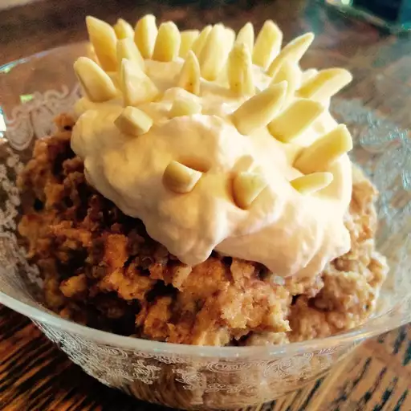

Serbian Wheat Pudding

Description
It's a simple and hearty dessert of cooked ground wheat fortified with ground walnuts and sugar. It's presented at special occasions such as Slava, Christmans and memorial services.
Ingredients
- 1 cup whole wheat berries
- ⅛ teaspoon salt
- 3 ½ cups chopped walnuts
- 2 cups confectioners' sugar
- 2 tablespoons blanched slivered almonds
- ¼ cup cold heavy whipping cream
Steps
- Make the pudding: Place wheat berries in a 3-quart saucepan; add boiling water to cover by 2 inches. Bring to a rolling boil. Let boil for 15 seconds, then drain and discard the water. Repeat five times: add boiling water, bring to a boil, boil for 15 seconds, drain.
- Cover wheat berries again by 2 inches with boiling water. Stir in salt and bring to a boil. Boil for 15 seconds, then remove from the heat without draining. Place the pan on a folded blanket, cover, and wrap with towels or blankets. Let sit at room temperature for 8 hours or overnight.
- The next day, drain any water that hasn't been absorbed. Grind wheat berries thoroughly in a food processor. (If you use a blender, work in very small batches.) Transfer ground wheat to a bowl and clean the food processor.
- Grind walnuts in the food processor until fine. Add confectioners' sugar and process until mixture resembles fine meal. Add ground wheat and pulse until well combined.
- Spoon pudding into a glass trifle bowl or serving dish. Stick slivered almonds into pudding to resemble a porcupine.
- Make the topping: Beat cream in a chilled glass or metal bowl with an electric mixer until stiff peaks form.
- Serve pudding in 2-tablespoon portions in small decorative bowls or custard cups. Top each serving with whipped cream.